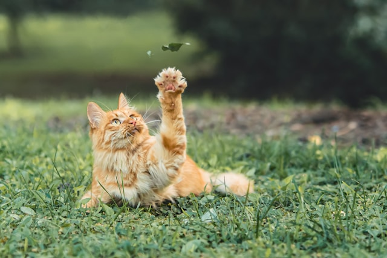

Header Logo
header link one
header link two
header link three
This website is awesome
This website has some subtext that goes here under the main tittle. It's a smaller font and the color is lower contrast
Sign up
